Jump to content.
Körséta
Feladatok
Galéria
Kvíz
Teszt
Térkép
Készítõk
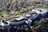
Citadella
Szépmûvészeti Múzeum
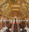
Parlament
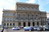
Magyar Tudományos Akadémia
Szent István Bazilika
Magyar Nemzeti Múzeum
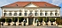
Sándor-palota
Széchenyi Gyógyfürdõ
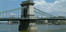
Széchenyi Lánchíd
Nemzeti Színház
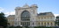
Keleti pályaudvar
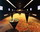
Terror háza múzeum
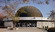
Planetárium - TIT Budapesti Planetárium
Puskás Ferenc Stadion
Országos Széchényi Könyvtár
Dohány utcai Zsinagóga
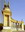
Hõsök tere
Budai Várnegyed
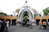
Fõvárosi Állat- és Növénykert
Margit-sziget
Magyar Állami Operaház
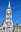
Mátyás-templom - Budavári Nagyboldogasszony-templom
Széchenyi Gyógyfürdõ
Nyugati pályaudvar
Budai Várnegyed
Margit-sziget
Pesti Vigadó
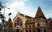
Központi Vásárcsarnok - Nagyvásárcsarnok
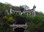
Gellért-hegy
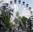
Vidámpark - Holnemvolt Park
Puskás Ferenc Stadion
Hõsök tere
Országos Széchényi Könyvtár
Széchenyi Lánchíd
Nemzeti Színház
Széchenyi Gyógyfürdõ
Vajdahunyad vára
Terror háza múzeum
Budai Királyi Palota - Budavári Palota
Parlament
Liszt Ferenc Nemzetközi Repülõtér
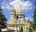
Halászbástya
Magyar Tudományos Akadémia
Magyar Nemzeti Múzeum
Szent István Bazilika
Válassz!
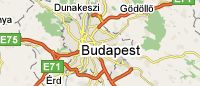
Válassz egy helyszínt!
01
02
03
04
05
06
07
08
09
10
11
12
13
14
15
16
17
18
19
20
21
22
23
24
25
26
27
28
29
30
31
Fõoldal